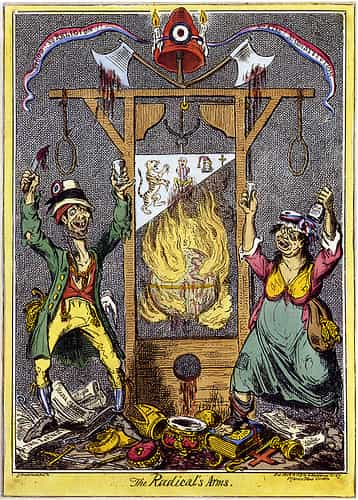
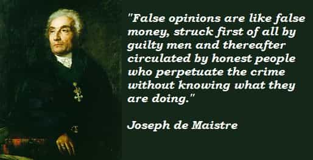
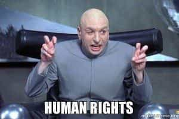

< < < Back
39 Statements That Reveal Whether You Are A True Man Of The Right – Return Of Kings
In keeping with the thrust of my articles over the past several weeks, let’s have a bit of fun. Tally up how many of the following 39 statements you agree with, and think about why. I’d love to hear your results in the comments. I’ll share more about the list and my thoughts, at the end.

1. All forms of racial segregation and discrimination are wrong.
2. Everyone is entitled to his own opinion.
3. Everyone has a right to free, public education.
4. Political, economic or social discrimination based on religious belief is wrong.
5. In political or military conflict it is wrong to use methods of torture and physical terror.
6. A popular movement or revolt against a tyranny or dictatorship is right, and deserves approval.
7. The government has a duty to provide for the ill, aged, unemployed and poor if they cannot take care of themselves.
8. Progressive income and inheritance taxes are the fairest form of taxation.
9. If reasonable compensation is made, the government of a nation has the legal and moral right to expropriate private property within its borders, whether owned by citizens or foreigners.
10. We have a duty to mankind; that is, to men in general.
11. The United Nations, even if limited in accomplishment, is a step in the right direction.
12. Any interference with free speech and free assembly, except for cases of immediate public danger or juvenile corruption, is wrong.
13. Wealthy nations, like the United States, have a duty to aid the less privileged portions of mankind.
14. Colonialism and imperialism are wrong.
15. Hotels, motels, stores and restaurants in southern United States ought to be obliged by law to allow blacks to use all of their facilities on the same basis as whites.
16. The chief sources of delinquency and crime are ignorance, discrimination, poverty and exploitation.
17. Communists have a right to express their opinions.
18. We should always be ready to negotiate with the Soviet Union and other communist nations.
19. Corporal punishment, except possibly for small children, is wrong.
20. All nations and peoples, including the nations and peoples of Asia and Africa, have a right to political independence when a majority of the population wants it.
21. We always ought to respect the religious beliefs of others.
22. The primary goal of international policy in the nuclear age ought to be peace.
23. Except in cases of a clear threat to national security or, possibly, to juvenile morals, censorship is wrong.
24. Congressional investigating committees are dangerous institutions, and need to be watched and curbed if they are not to become a serious threat to freedom.
25. The money amount of school and university scholarships ought to be decided primarily by need.
26. Qualified teachers, at least at the university level, are entitled to academic freedom: that is, the right to express their own beliefs and opinions, in or out of the classroom, without interference from administrators, trustees, parents or public bodies.
27. In determining who is to be admitted to schools and universities, quota systems based on color, religion, family or similar factors are wrong.
28. The national government should guarantee that all adult citizens, except for criminals and the insane, should have the right to vote.
29. Joseph McCarthy was probably the most dangerous man in American public life during the fifteen years following the Second World War.
30. There are no significant differences in intellectual, moral or civilizing capacity among human races and ethnic types.
31. Steps toward world disarmament would be a good thing.
32. Everyone is entitled to political and social rights without distinction of any kind, such as race, color, sex, language, religion, political or other opinion, national or social origin, property, birth or other status.
33. Everyone has the right to freedom of thought, conscience and expression.
34. Everyone has the right to freedom of opinion and expression.
35. The will of the people shall be the basis of the authority of government.
36. Everyone, as a member of society, has the right to social security.
37. Everyone has the right to equal pay for equal work.
38. Everyone has the right to form and to join trade unions.
39. Everyone has the right to a standard of living adequate for the health and well-being of himself and of his family, and the right to security in the event of unemployment, sickness, disability, widowhood, old age or other lack of livelihood in circumstances beyond his control.

The 39 sentences were written by James Burnham, in his book The Suicide of the West. Burnham recognized that Liberalism was a “syndrome,” producing incoherent attitudes and unprincipled exceptions in Western civilization to the detriment of its inherited, Classical and Christian Tradition. These articles illustrating post-revolutionary thought, can expose how effectively the solvent of Liberalism has acted upon Western minds, obliterating all trace of the old order.
Many who think of themselves as men of the “right,” nowadays, would agree with many of the points. A solid man of the right will disagree with all or nearly all of them, however. I ran into these articles on another man’s blogs some time ago, and I’ll share the comments I had at that time, here. I’ll go somewhere further with this, in upcoming articles.
My tally:
Agree – 2; Agree w/Qualification – 2; Disagree – 30; Disagree Vehemently – 5.
This is the key difference between a partisan of the Left’s Revolution, and a Reactionary: the partisans of the Revolution believe in “rights” irrespective of what is Right (i.e., you have “rights” to do things that may in many cases be morally wrong or irrational), whereas a Reactionary holds to the only logically coherent view, substantively present in Pagan philosophy and enshrined in the Holy Tradition of the Church: “error has no rights.” This is because a right is a claim based on justice, and there is no just claim for a blanket permission to engage in behaviours irrespective of their moral or rational quality.
Nevertheless, it will in many cases still be right to tolerate things that fall short of perfect justice, because this serves the greater good more effectively than an attempt to ferret out all imperfection in society. This is not only common sense, but is the teaching of all the Fathers and Doctors of the Church. But once you enshrine the idea that people have a right or entitlement to engage in behaviours that should at most be tolerated in some instances (and punished in others), you have exposed every good and decent thing to the corrosive influence of incoherent, Modernist, Liberal thought.
Take #34 (free speech), for example. Nobody is entitled by right to think or say, let alone do, whatever they please, irrespective of its content and quality, however much this is or should be tolerated in certain circumstances. Yet, we can truly say that our tradition strongly prefers that everyone have his say (I won’t say “her say”), in many cases. There is a difference between saying there cannot be a right to a wrong, and saying that wrongs must be outlawed; it is often praiseworthy to tolerate wrongs, but this must not lead us to accord rights to what is wrong.
In a sane society, there is no “right” for sodomites to publicly celebrate rectal abuse, or for socialists to demand that we should all be robbed and disinherited by the state, or for feminists to disobey their husbands and argue for their independence from male authority. They certainly have no right to speak so; indeed, it is we who would have the right, on our side, to compel their silence—even with force, in certain circumstances. Though, we may in certain cases do better to tolerate them (increasingly big emphasis on “may”).
What did I agree with? I agreed with the proposition that torture is wrong (if “torture” is a deliberate and calculated affair; beating the crap out of a detainee because you need the code to disarm the nuke that’s about to go off is not “torture,” it’s the only morally decent thing to do). I also agreed that, at present, Congressional Investigative Committees are likely to be dangerous, and require oversight.
I expressed qualified agreement with the notion (#6) that folk may revolt against tyranny – provided that the tyranny is actually immoral, and provided that one abides by the guidelines of Reason and the Church (esp. as articulated by St. Thomas), which discourage pointless bloodshed if there is little chance that armed conflict will succeed in its aims of abolishing the tyranny. I also feel a qualified agreement with #13 (that wealthy nations have a duty to the less fortunate), provided we understand that the duty is one of charity, not one of strict, legal obligation.
I disagreed with the rest.

I vehemently disagreed with notions #15 (compulsory desegregation) #28 (the state must ensure universal suffrage) #29 (allowing teachers to overrule even parents in the name of “academic freedom”) #35 (the will of the people shall be the source of the state’s authority) and #39 (people are owed a living). It seems to me that the common factor in my especially righteous indignation at these notions, is due to the fact that, in addition to having no rational basis (as with most of the other notions), they also go on to call for proactive violence against the reasonable view. I.e., it is already irrational to assert a “right” to free speech and “academic freedom” irrespective of objective morality; but it goes a step further to actually use these erroneous concepts as a weapon against parental rights, which actually do exist and are morally sound.
I used to think segregation served no purpose but giving vent to racism; reviewing crime statistics and recent events, and coming to realize that property rights and the right of free association are morally sound, I now see that business owners both have legitimate interests, and a positive right, for excluding anyone they wish from their property. Justice isn’t about utopian ideals; it is about finding the equilibrium where no actual right is violated, however far this may fall from a moral ideal, in a very imperfect world. Or, as to #35, it should be obvious that all authority is vested in truth and exercised from above, so rooting it in the whims of authority’s rightful subjects is itself the essence of stupidity and self-contradiction.
Let me know your thoughts, and we’ll go from there next week.
Read More: It’s Becoming Too Dangerous For College Males To Date Girls On Campus